November 8, 2026 · Before: commit 7d42f0e · After: working fixes · Matched 1440 × 1000 browser captures.
Tests ran against an isolated database copy. Receipt images are labeled QA samples. Click an image to inspect its original resolution.
Before
Another learner’s receipt was visible.
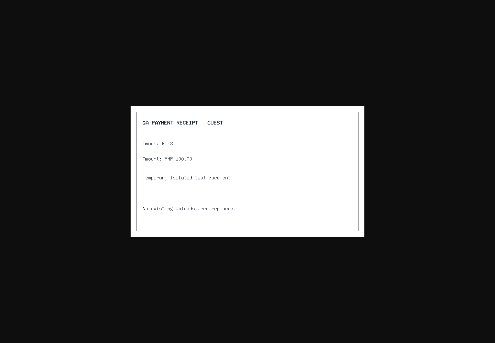
After
Access denied (403); owners retain access.
A secretary could view another branch’s payment proof.
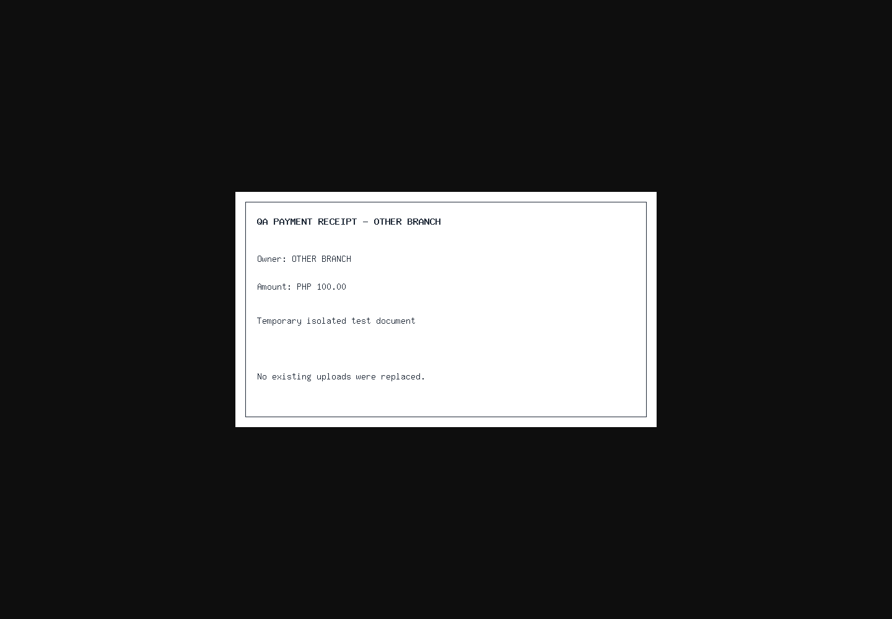
Other-branch proof is denied (403).
School settings were editable by branch secretaries.
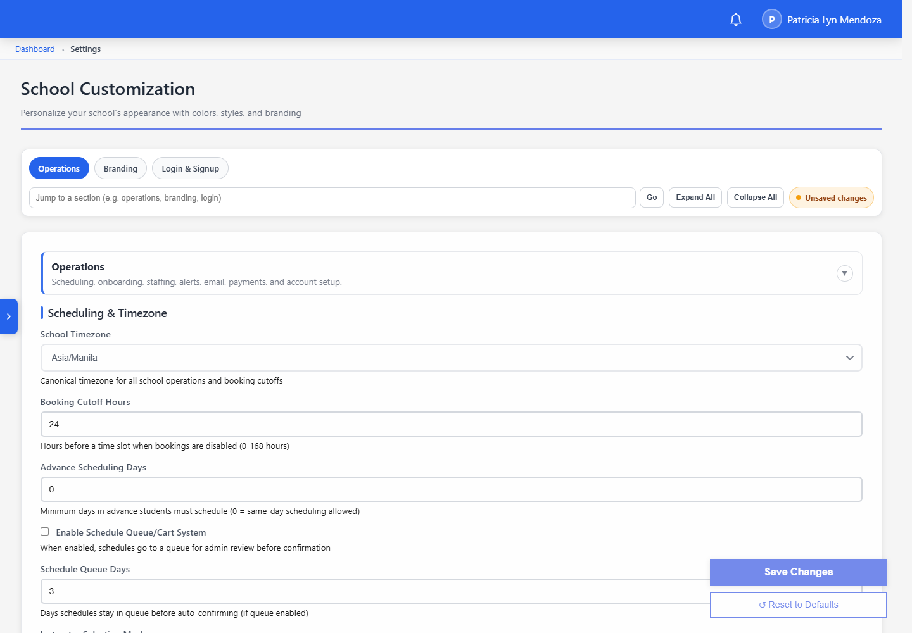
School-wide settings, course management and financial reports require a school administrator.
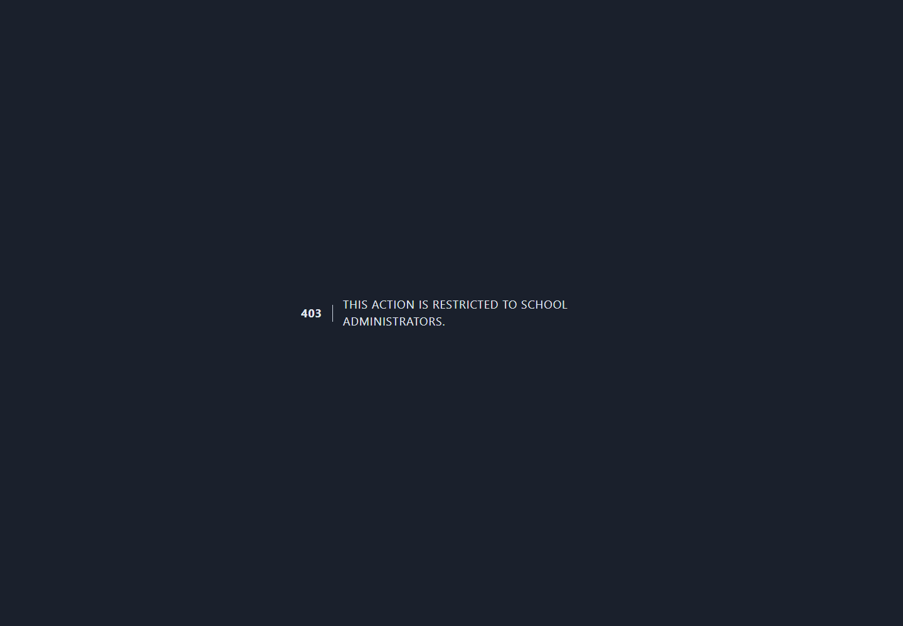
The detail link returned a server error (500).
The verification dashboard opens successfully.
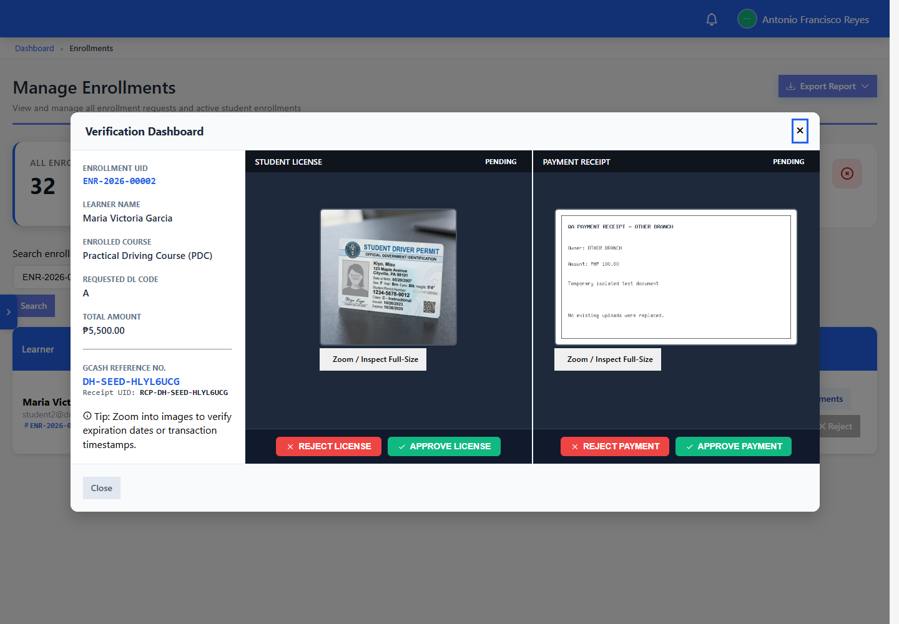
The edit page returned a server error (500).
The edit form loads; saved changes persist.
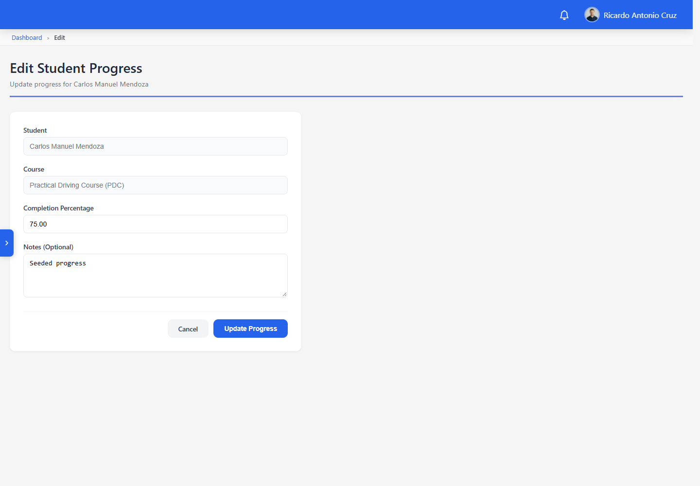
Create Lesson returned access denied (403).
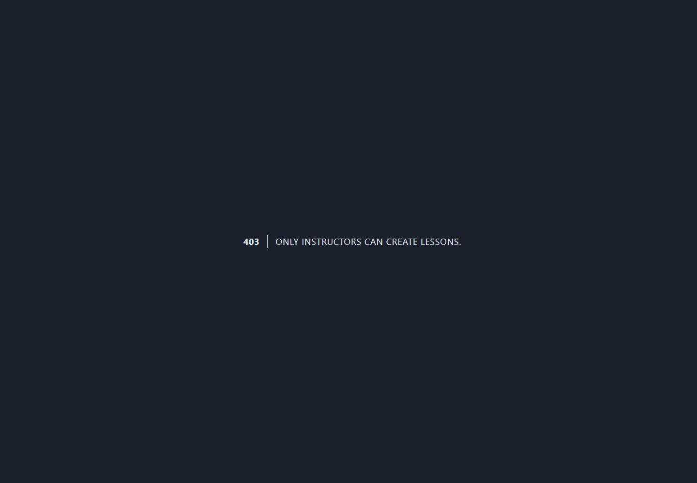
Administrators can create, edit and delete lessons through admin routes.
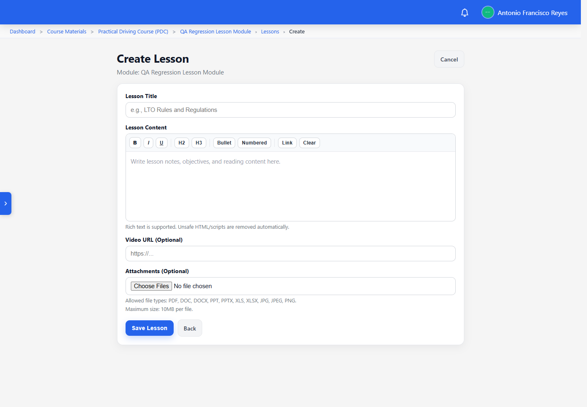
A duplicate title caused a server error (500).
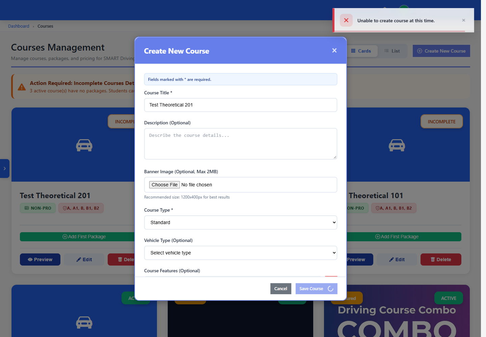
The title field shows a validation error (422).
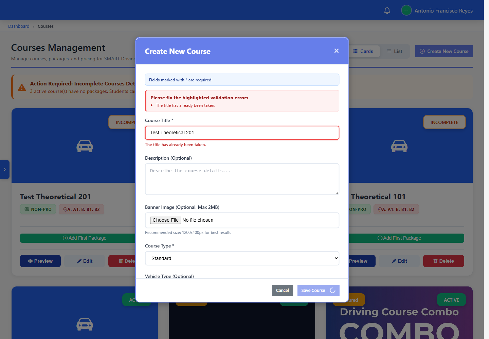
Requesting a reset returned a server error (500).
Reset requests succeed; token validation and password updates pass.
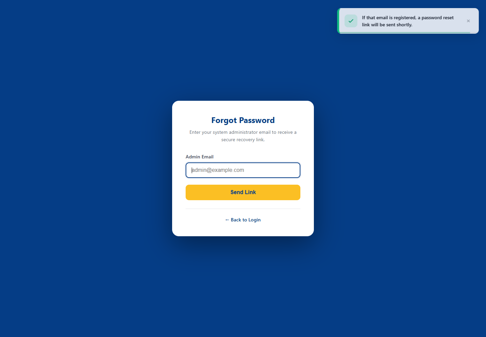